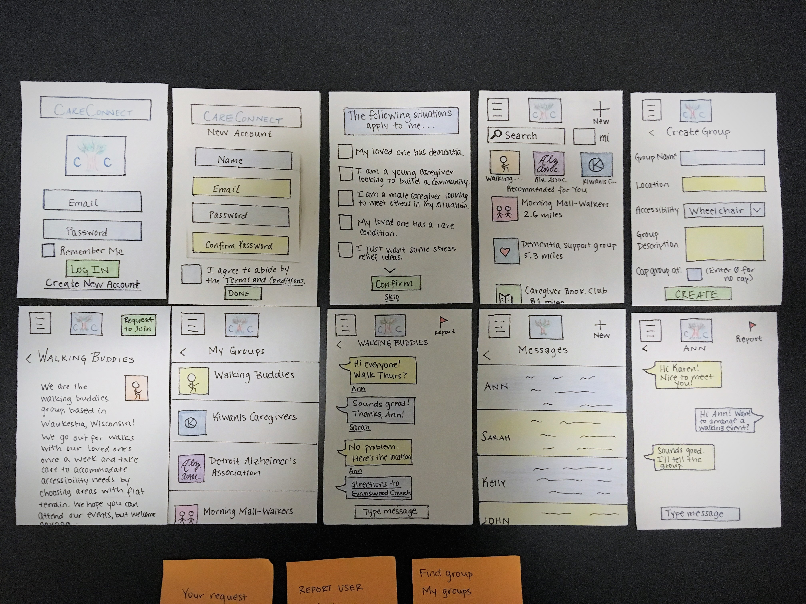
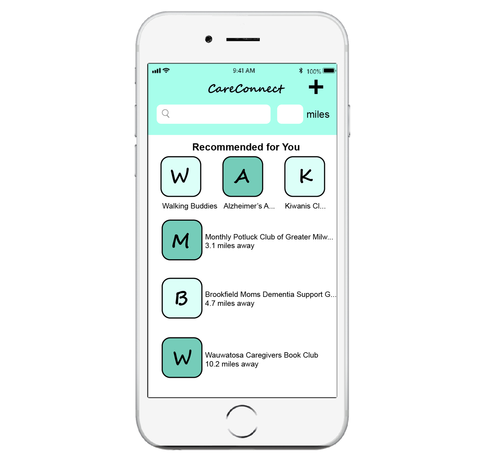

Overview
Problem: Caregivers often face high levels of stress, burnout, and isolation. More people are facing these challenges as the population ages. Through my design, I hoped to increase social support for caregivers.
Solution: An app that builds community among caregivers by connecting people in similar situations.
Duration: Academic project lasting four months.
Role: Interaction Designer.
Alternatives
What are some potential solutions?
To start out, I conducted some initial research into the problem space to learn more about caregivers and their unique needs. From looking into the literature, I learned that caregivers frequently struggle with isolation, especially those who are part of the sandwich generation.
After considering the problem space in depth, I sketched several possible solutions. I created a storyboard for each potential solution, and I settled on an app-based approach after considering each idea’s workflow and feasibility. While there are plenty of support groups and similar solutions available through city governments and other organizations, the digital space is somewhat lacking for caregivers. Most websites and apps primarily focus on providing information for managing loved ones' conditions rather than connecting people.

Personas
Who are my users?
To better understand my users, I did some research to learn more about caregivers' experiences. I read journal articles as well as documentation from the Alzheimer's Assocation, the Caregiver Space, and other relevant resources to inform the creation of three personas. From my research, I learned that most caregivers in the U.S. are older themselves (50+). Many caregivers are also taking care of a child and holding a full-time job in addition to caring for an elderly relative.
{kind=link}
{kind=link}
Prototyping
Based on my personas, I identified the need for a tailored experience within the app. My users would receive the most benefit from being able to meet other caregivers facing similar challenges, so I gave users the option to input information about their individual situations during account setup. To build community, I provided users with the flexibility to search for groups by mile radius. I began to draft my solution, beginning with paper prototyping. Pictured is my second draft, which incorporates feedback from potential users.
Digital Prototype
After testing my revised paper prototype again with peers and caregivers, I created my digital prototype. Based on the feedback I received from users, I streamlined the account setup process and incorporated a tutorial into this version.
View Interactive PrototypeWhen first setting up the app, users can input information about their unique situations so that the app can tailor its suggestions and provide a personalized experience.
After initial setup, the user is taken to the home screen, where tailored recommendations are displayed at the top. There is an option to search by keyword or mile radius, and groups that aren't in the top row of recommendations are sorted by mile radius. Emphasizing groups that are close to home helps to build community locally and makes it easier for users to participate.
Choosing a group from the home screen takes the user to a details view. All groups have information regarding accessibility accommodations. This decision was made based on comments from caregivers that it can be difficult to find social activities that accommodate these needs. Additionally, group creators have the option to cap groups. A smaller group size encourages participation, thereby building community and a supportive network.
What I learned
1. Iteration is the key to good design.
My first prototype was missing several interactions that were fundamental to my final prototype’s success. Through multiple rounds of revision based on user feedback, I was able to weed out major design flaws and streamline the interface of my project.
2. Feedback is a gift.
While my peers and I were hesitant at first to share our honest critiques, their perspectives helped me to refine my work enough to focus on the small details. Positive feedback was just as important as constructive criticism. Seeing my users complete some interactions with no problems showed me which components would be central to the project’s success. When my users didn’t notice the design decisions at all, I knew that these decisions had been effective.